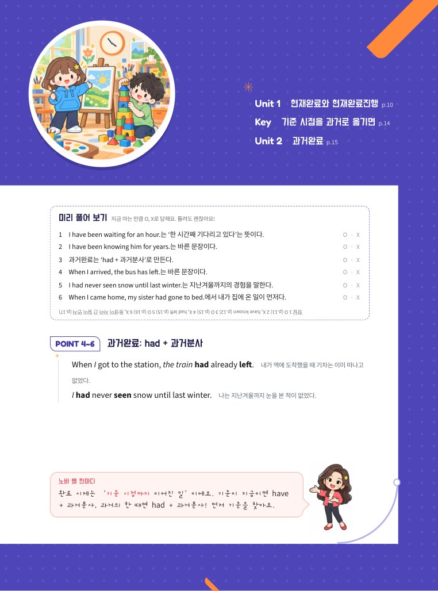
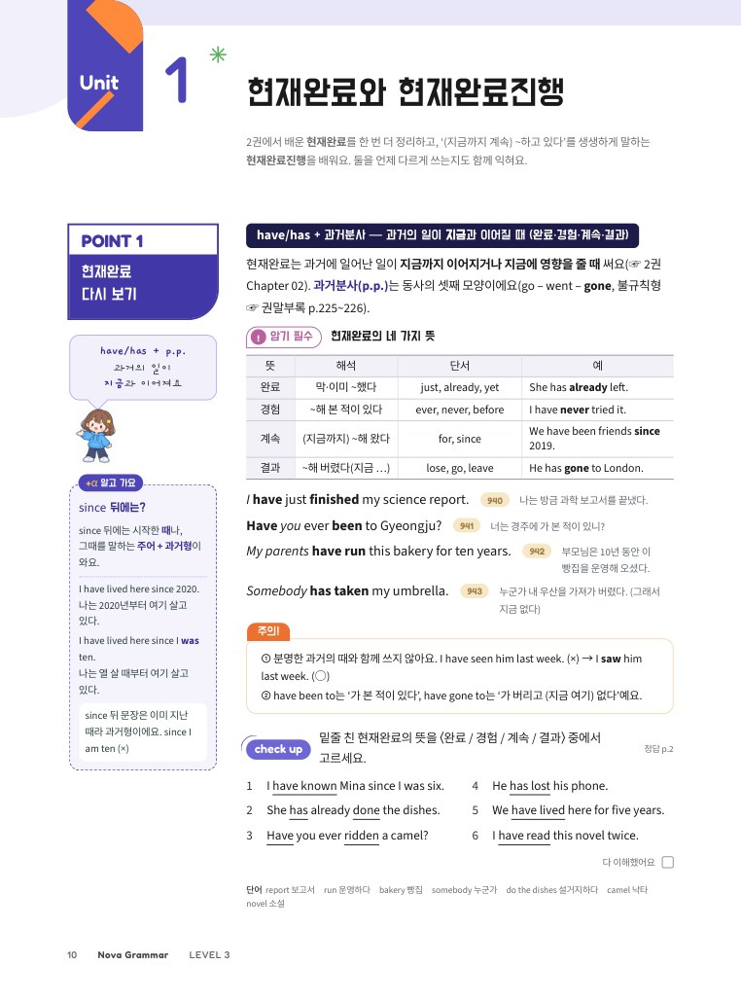
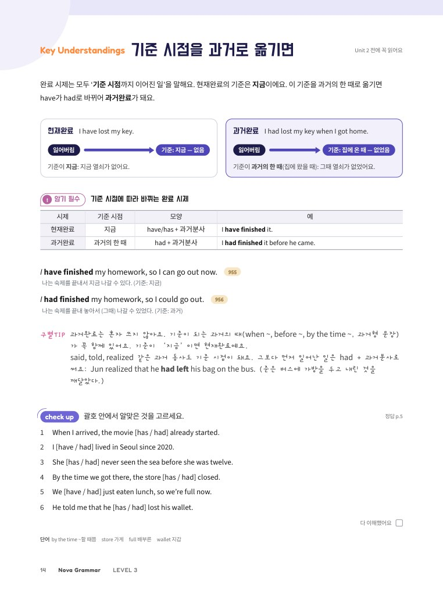
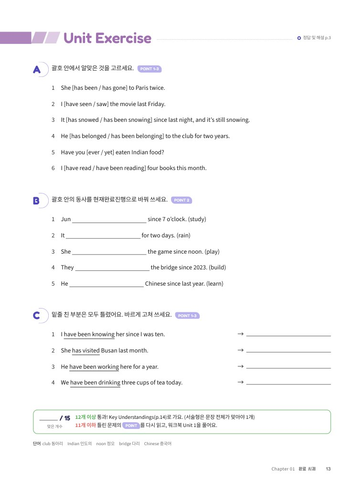
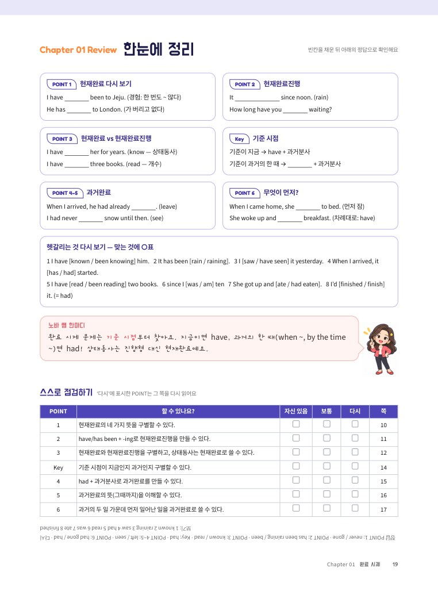
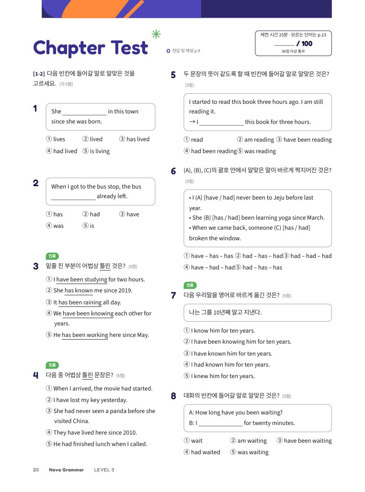
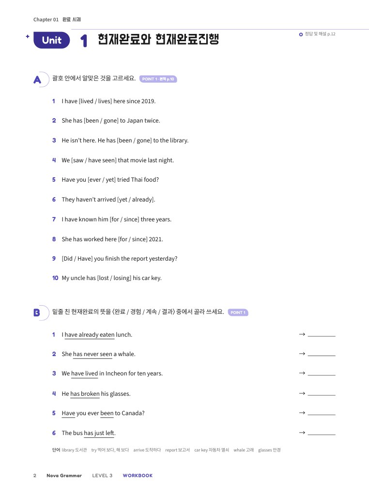
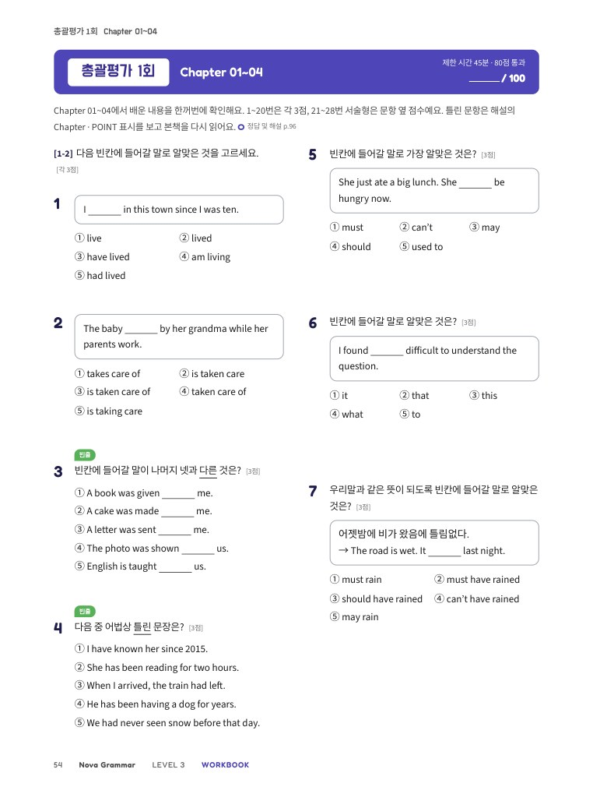
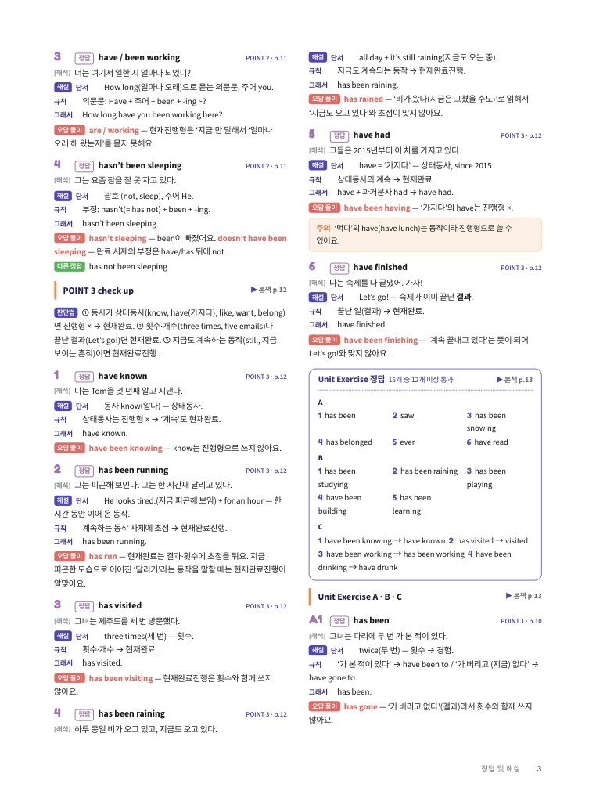

Nova Grammar
혼자서도 끝까지 하는 중3 영문법
머리말
Preface2권을 마치고 3권을 펼친 여러분에게
3권은 중학교 문법의 마지막 계단이에요. 과거완료, 조동사 + have + 과거분사, 분사구문, 관계부사, 가정법, 화법처럼 이름부터 어려워 보이는 것들을 만나요. 하지만 대부분은 2권에서 익힌 모양 위에 한 층을 더 쌓는 것이에요. 그래서 많은 POINT가 ‘다시 보기’로 시작해요.
이번 권에서는 시제를 한 칸 물리는 일이 자주 나와요. 과거보다 앞선 일은 과거완료로, 지나간 일을 짐작할 때는 have + 과거분사로, 사실이 아닌 일을 말할 때는 가정법으로 한 칸 물러서요. 이 원리 하나만 붙잡으면 3권의 절반이 쉬워져요.
POINT 박스 아래 왼쪽 칸의 +α 상자 가운데 ‘맛보기’는 고등학교에서 자세히 배울 내용을 살짝 미리 보는 곳이에요. 문제로는 내지 않으니 부담 없이 읽어요. Key Understandings 쪽은 Unit을 시작하기 전에 큰 그림을 먼저 보여 줘요.
공부하는 방법은 1·2권과 같아요. 규칙 한 줄을 읽고, 해석이 붙은 예문을 소리 내어 읽고, 문제를 푼 뒤 통과 기준을 확인해요. 정답 및 해설은 모든 선택지를 해석하고 왜 맞고 틀리는지까지 적었어요. 막히면 해설이 선생님이 되어 줄 거예요. 마지막 장을 넘기는 날, 여러분은 고등학교 영어를 맞이할 준비가 되어 있을 거예요.
NOVA ENGLISH
차례
Contents2권 핵심 다시 보기 p.6~7
구성과 특징
How to Use This Book한 Chapter는 도입 → (Key) → Unit(개념 + Unit Exercise) → 정리 → Chapter Test → 다시 보기 순서로 이어져요. 1·2권과 같은 흐름이라 바로 시작할 수 있어요.









혼자서도 끝까지! Nova Grammar 공부법
이 책은 선생님 설명 없이 혼자 공부할 수 있게 만들었어요. 아래 순서대로 공부하고, 통과 기준을 넘으면 다음 단계로 가요. 하루 30분 안팎으로, 진도표(p.5)의 계획을 따라가면 알맞아요.
- 학습 목표와 미리 풀어 보기 — Chapter 첫 쪽에서 무엇을 배울지 읽고, O/X 문제로 지금 아는 것을 확인해요.
- Key Understandings가 있으면 먼저 읽어요. 그 Chapter를 꿰뚫는 큰 원리예요.
- POINT 읽기 — 규칙 한 줄 → 설명 → 예문 순서로 읽어요. 예문은 소리 내어 읽고 해석과 맞춰 봐요. 2권 내용이 생각나지 않으면 ☞ 표시를 따라가거나 p.6~7을 펼쳐요.
- +α 상자 — POINT 박스 아래 왼쪽 칸은 본문을 이해한 다음에 읽어요. ‘맛보기’는 고등학교 내용 미리 보기라 문제로 내지 않아요.
- check up → Unit Exercise — 바로 풀고 바로 채점해요(정답 및 해설). 맞은 개수를 적고 통과 기준을 확인해요.
- 한눈에 정리 → Chapter Test — 빈칸을 채우며 정리한 뒤, 시험처럼 25분 안에 풀고 100점 만점으로 채점해요.
- 오답노트와 다시 볼 곳 — 틀린 문항이 어느 POINT인지 표에서 찾아 복습하고, 오답노트에 이유를 적어요.
- 워크북으로 한 번 더 연습하고, 단어 정리로 마무리해요. 4개 Chapter마다 총괄평가를 풀어요.
다시 기준보다 낮으면: ① 틀린 문제를 해설 보기 전에 한 번 더 풀기 → ② 문제 옆 POINT 표시를 보고 그 POINT를 다시 읽기 → ③ 그래도 모르면 해설 읽기 → ④ 워크북의 같은 Unit 풀기
| 과거완료 | 〈had + p.p.〉 과거의 어느 때보다 먼저 일어난 일 (☞ Chapter 01) |
|---|---|
| 분사구문 | 〈접속사 + 주어 + 동사〉를 분사로 줄인 덩어리 Walking home, I met Jun. (☞ Chapter 06) |
| 가정법 | 사실이 아닌 일을 시제를 한 칸 물려 말하는 법 If I were a bird, … (☞ Chapter 10) |
| 직접 · 간접 화법 | 남의 말을 따옴표 그대로 / 내 말로 바꿔 전하기 (☞ Chapter 11) |
나의 학습 진도표
My Study PlanUnit을 끝낼 때마다 □에 표시하고 점수를 적어요. 통과 칸에 표시가 쌓이면 실력도 쌓여요.
| Chapter | Unit 1 | Unit 2 | Unit 3 | Unit 4 | 본책 Test | 워크북 Test | 통과 | 시작한 날 | 끝낸 날 |
|---|---|---|---|---|---|---|---|---|---|
| 01 완료 시제 | — | — | /100 | /100 | |||||
| 02 조동사 | — | — | /100 | /100 | |||||
| 03 수동태 | — | /100 | /100 | ||||||
| 04 부정사 | — | /100 | /100 | ||||||
| 총괄평가 1회 (Ch 01~04) | 워크북 총괄평가 | /100 | |||||||
| 05 동명사 | — | — | /100 | /100 | |||||
| 06 분사 | — | /100 | /100 | ||||||
| 07 비교 | — | — | /100 | /100 | |||||
| 08 접속사 | — | /100 | /100 | ||||||
| 총괄평가 2회 (Ch 05~08) | 워크북 총괄평가 | /100 | |||||||
| 09 관계사 | /100 | /100 | |||||||
| 10 가정법 | — | /100 | /100 | ||||||
| 11 일치와 화법 | — | /100 | /100 | ||||||
| 12 특수 구문 | — | /100 | /100 | ||||||
| 총괄평가 3회 (Ch 09~12) | 워크북 총괄평가 | /100 | |||||||
| 날 | 할 일 | 쪽 | 완료 |
|---|---|---|---|
| 1일 | 2권 핵심 다시 보기 · 미리 풀어 보기 · POINT 1~2 | p.6~11 | |
| 2일 | POINT 3 · Unit Exercise (Unit 1) · Key Understandings | p.12~14 | |
| 3일 | 워크북 Unit 1 | 워크북 p.2~5 | |
| 4일 | POINT 4~6 · Unit Exercise (Unit 2) | p.15~18 | |
| 5일 | 워크북 Unit 2 · 서술형 집중 | 워크북 p.6~11 | |
| 6일 | 한눈에 정리 · Chapter Test · 오답노트 | p.19~22 | |
| 7일 | 워크북 Chapter Test · 단어 정리 | 워크북 p.12~13 · 본책 p.23 |
2권 핵심 다시 보기 ① 동사의 모양
Review3권의 문법은 2권에서 익힌 동사 모양 위에 한 층씩 쌓여요. 아래 표가 바로 나오지 않으면 2권의 그 Chapter를 한 번 훑고 시작해요.
| 규칙 | -ed: play – played – played · study – studied – studied |
|---|---|
| 불규칙 (예) | go – went – gone · see – saw – seen · eat – ate – eaten · write – wrote – written · steal – stole – stolen |
| 모양 | have / has + p.p. · 부정 haven’t + p.p. · 의문 Have you + p.p. ~? |
|---|---|
| 네 가지 뜻 | 계속 · 경험 · 완료 · 결과 I have lived here for ten years. |
| 함께 못 쓰는 말 | 분명한 과거 표현 yesterday, last week, ~ ago, When ~? I |
| 추측 | must 틀림없이 ~이다 · may ~일지도 모른다 · can’t ~일 리가 없다 |
|---|---|
| 의무·충고 | must / have to ~해야 한다 · should ~하는 게 좋다 · had better ~하는 게 낫다 |
| 과거 습관 | used to + 동사원형 (예전에는 ~했다, 지금은 아님) |
| 모양 | 주어가 당하는 문장 be + p.p. (+ by 행위자) This bridge was built in 1990. ↔ 능동태: 주어가 직접 하는 보통 문장 |
|---|---|
| 만들기 | ① 목적어 → 주어 ② 동사 → be(시제·수에 맞게) + p.p. ③ 원래 주어 → by + 목적격 (막연하면 생략) |
| 조동사 | 조동사 + be + p.p. It can be seen at night. |
| by 말고 | be interested in · be covered with · be made of / from · be known for |
| 목적격보어 | 목적어가 누구인지·어떤 상태인지 설명하는 말 They call him Max. |
|---|---|
| 사역동사 · 지각동사 | 시키는 동사 make, have, let · 보고 듣고 느끼는 동사 see, hear, feel |
| to부정사 | 명사(~하는 것) · 형용사(~할) · 부사(~하기 위해, ~해서) I need something to drink. |
|---|---|
| 동명사 | 명사 자리의 -ing · enjoy, finish, mind + -ing I enjoy reading. |
| 분사 | 하는 쪽 -ing · 당하는 쪽 p.p. · 감정: 주면 -ing, 느끼면 -ed a broken window / I was bored. |
2권 핵심 다시 보기 ② 문장을 잇는 말
3권 후반부의 접속사·관계사·가정법·화법은 모두 〈주어 + 동사〉 덩어리(절)를 다른 문장에 붙이는 이야기예요.
| 원급 · 비교급 | as ~ as · -er / more ~ than · 강조 much, even, far |
|---|---|
| 최상급 | the -est / most + 범위(in, of) · one of the + 최상급 + 복수 명사 |
| 짝 접속사 | both A and B · either A or B · neither A nor B · not only A but also B |
|---|---|
| 부사절 | when, because, if, though — 때·조건 부사절은 미래도 현재형 If it rains tomorrow, … |
| 명사절 | that(~라는 것) · if / whether(~인지) · 간접의문문(의문사 + 주어 + 동사) |
| 부정대명사 | 둘 one ~, the other … · 셋 one, another, the other · 여럿 some ~, others … |
|---|---|
| 형용사 · 부사 | 명사를 꾸미거나 보어 자리면 형용사, 그 밖은 부사 — 빼도 문장이 되면 부사 She looks happy. / She smiled happily. |
| 모양 | 사람 who(m) · 사물 which · 둘 다 that · 소유격 whose · 선행사 없음 what |
|---|---|
| 빈자리 | 관계대명사 뒤 문장에는 주어나 목적어가 하나 빠져 있어요 the bag (which) I bought ___ |
| 절 · 주절 · 종속절 | 〈주어 + 동사〉 덩어리 · 문장의 중심 절 · 접속사·관계사로 붙은 절 I know [that he is kind]. |
|---|---|
| 선행사 · 가주어 | 관계대명사가 꾸미는 앞 명사(the bag which ~) · 긴 주어 대신 두는 It(‘그것’ ×) |